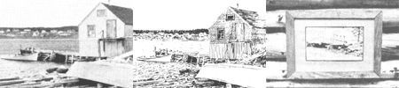
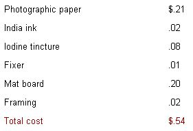

David VanderZwaag turns his winter evenings into summer cash!
For about 544, 1 can turn an everyday black-and-white photo into a $16.00 work of art ... and, my easy, enjoyable home business doesn't require any special talent or equipment, either!
In fact, if you can gather together some matte-finish (not glossy!) black-and-white photographs, a lettering pen (and, as an option, a crow quill pen), a jar of waterproof India ink, three developing trays (old cake pans will do), two ounces of tincture of iodine, and a quart of photographic fixer, you'll be all set to go into business for yourself!
To make a photosketch, just ink over all of the gray and black tones in the picture (leave the white areas alone) with India ink. Be neat and careful, and work down from the top of the print to avoid smears. It's best to just outline some objects, completely blacken in others, and experiment with different types of lines: vertical and horizontal, short and long, and thick and thin. (The lettering pen will make thick, heavy lines, while the crow quill point produces thin,. light marks.) Be sure to "fill in" the picture I because the photographic image will later be bleached away, and only your ink marks will appear in the final photosketch.
While the ink dries (usually in 30 minutes or so), set out three trays that are slightly larger than the photo's dimensions (I use 8" X 10" prints, which are easy to develop at home-or inexpensive when done by a photo lab-and are a convenient size to ink and frame.)
Then, in the first tray (No. 1), mix two ounces of iodine tincture with three cups of room-temperature water. (If this solution won't quite cover your prints, add a bit more water.)
With this done, fill the second tray (No. 2) with room-temperature water, and then pour a quart of photographic fixer (available at most any photo shop), mixed according to the manufacturer's instructions, into tray No. 3.
When the chemicals are ready and the inked photo is dry, immerse your sketch--image side up-in the iodine solution for one or two minutes . . . or until the picture turns a uniform olive-green color. (Handle the photo with rubber gloves, forceps, or photographic tweezers to prevent stained fingers!)
Once the color change is complete, remove the photo from the iodine and submerge it in tray No. 2 (the water) for 30 seconds ... being careful not to touch the ink. This "bath" will rinse off any excess iodine.
After that, dip the print (again, image side up) in tray No. 3 and watch a miracle take place. The olive-green background will dissolve in the photo fixer and leave nothing but your India ink "artwork"!
When all of the color has disappeared (you may have to rock the tray to speed up the process), remove the sketch and rinse it for five minutes in running water . . . but don't wipe it, or you'll smear the ink. For best results, dry your picture between sheets of blotting paper-or the pages of a book-for one or two days before you frame it.
There are dozens of seaside farms--each with several dilapidated old outbuildings--within a few miles of my Nova Scotia island cabin. The owners are usually glad to have me carry away boatloads of old barnboard ... because while I'm supplying myself with rustic, weather-beaten lumber for my photosketch frames, I'm also ridding their land of these ramshackle eyesores'
I don't own a power saw, so I've made a deal with the local industrial arts shop to cut my scavenged planks into one- by three-inch strips . . . for 10c per 100 feet. Then, I simply miter these strips into 18- and 24-inch lengths, and nail 'em together to make rectangular frames.
And, once I mat the photosketch and tack it to a completed frame, I always glue a piece of brown wrapping paper (or a section of paper bag) over the back of the mat to give the product a "finished" look.
My production costs-for one photosketch-break down about like this:
(If you have to send your snapshots to a photo lab to be enlarged, add $1.00 to $2.00 to the above production costs.)
Because our isolated cabin has no electricity, I enlarge 100 photos at a friend's house each October. Then, when wintry winds begin to sneak through the cabin's chinks, I pull out a photo and start to sketch. I usually have 100 framed "masterpieces" all ready to peddle come spring.
The local tourist shops take my photosketches on a commission basis and retain 25% of the sales price. Each sketch usually sells for $16.00 . . . $4.00 for the store and $12.00 for me. And, since I only have to make that one spring trip to the shops, the valuable summer months are kept free for homestead chores. (The shops just mail me my checks in the early fall, and it's a very poor tourist season indeed if I have to pick up any unsold pictures!)
On a few free summer weekends, I also set up a booth (for a $5.00 fee) at an urban farmers' market ... and reap almost pure profits on. my sales. My best contacts, however, are made at our county's craft festival, which is held at the peak of the tourist season. While there, I sell to both tourists and local residents and also expose my work to out-of-town store owners.
At other times I display my drawings in local banks and shops, which see the artwork as an added attraction for their customers. (Interested parties can then contact me at home to make their purchases.)
I've found that my relatives and friends are also good -customers. People like to buy personalized sketches of their homes, and black-and-white photosketch portraits are big sellers, too.
This summer, at the suggestion of a local shop owner, I plan to expand my artistic output to include postcards printed from my sketches.
The postcard business ought to increase my earnings from this pleasant hobby, but my average annual income (from 100 photosketches) is already $1,200. Which, when you subtract the $54 that those sketches cost me to produce, figures out to $1,146 in clear profit.
And that's not bad pay for some pleasant, part-time winter fun!
|
 PHOTO/ILLUSTRATION BY THE AUTHOR This plain old everyday black-and-white photo can, with a few hours' work and a total investment of 54? . . . be turned into this ""work of art"", which may be ... framed with recycled materials and sold for $16! |
 |
|